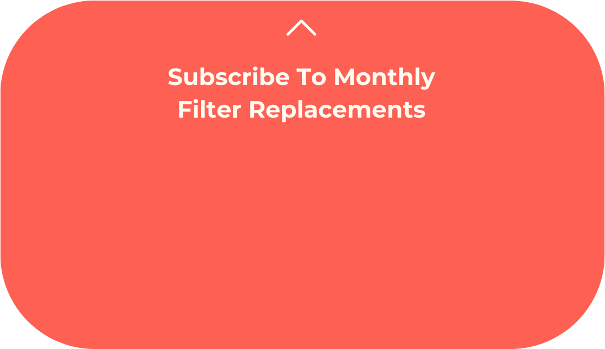

Hand Held Showerhead
FAQs
Will this fit with my water pipe? How often do I replace the filters? How do I increase pressure? Is this safe for renters / owners?Yes, our showerhead, hoses, and holders are all designed to fit your pipe dimensions. Pipes in the United States are standardized to have 1/2 inch outer diameters. Soom Shower will perfectly fit most bathrooms. For any leaks, a small amount of plumbing tape - included in the Starter Kit - will provide an easy fix.
Yes, our showerhead, hoses, and holders are all designed to fit your pipe dimensions.
Pipes in the United States are standardized to have 1/2 inch outer diameters. Soom Shower will perfectly fit most bathrooms. For any leaks, a small amount of plumbing tape - included in the Starter Kit - will provide an easy fix.
For best performance, the Aqua Purifying Filter should be replaced every 1 to 2 months. However, if the filter color darkens quickly, then more frequent replacements are recommended.

The Soom Showerhead is designed to provide a soothing and steady experience that balances water pressure with conservation.
However, to increase water pressure, check your showerhead holder or hose for removeable water flow restrictors which are mandated by federal regulations to optimize water usage.
Yes, installation is simple and will not cause any damage to pipes or plumbing.